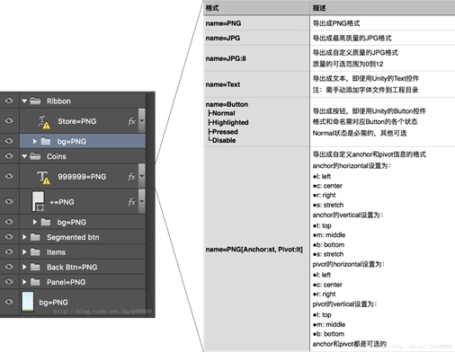
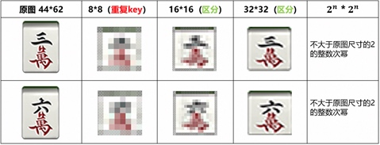
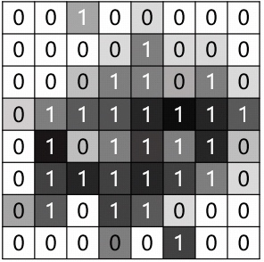

Technical Solution for PSD2UMG
This document provides a detailed technical solution for implementing the PSD2UMG system, which automates the process of converting Photoshop (PSD) designs into user interfaces (UI) in Unity 3D and Unreal Engine. The following sections outline the core components and steps involved in realizing the PSD2UMG workflow. There are several algorithms implied in this solution, which will be introduced later in other blogs.
1. Sensory Tree Generation
To generate a sensory tree from a PSD file, you will need to:
-
Parse the PSD file: Use a PSD parsing library (e.g., psd-tools for Python) to extract layer information from the PSD file, including layer names, dimensions, positions, and visibility.
 -
Create tree nodes: For each layer in the PSD file, create a node that stores the layer's properties, such as its name, dimensions, and position.
-
Establish parent-child relationships: Analyze the layer hierarchy in the PSD file and establish parent-child relationships between the nodes created in step 2. This can be done by analyzing the layer order, layer groups, and visibility settings.
-
Construct the sensory tree: Assemble the nodes and their relationships into a tree data structure that represents the hierarchical organization of the PSD design.
2. Tree Structure Encoding
With the sensory tree generated, you can now encode the tree structure as a string for efficient comparison. One approach is to use a pre-order traversal algorithm:
-
Pre-order traversal: Traverse the sensory tree in a pre-order fashion (i.e., visit the parent node first, followed by its children) and create a string representation of the tree structure. You can use special characters to indicate the start and end of each node (e.g., '{' and '}').
-
Node encoding: For each node in the tree, encode its properties as a string. This can include the node's type, dimensions, position, and other relevant attributes.
-
Concatenate node strings: Concatenate the encoded node strings generated in step 2 as you traverse the tree. This will create a single string representation of the tree structure, which can be used for efficient comparison.
3. Tree Similarity Calculation
To calculate the similarity between two sensory trees, you can use the following approach:
-
Encode the trees: Encode the tree structures of both the PSD and the UI using the tree structure encoding method described in the previous section.
-
Compute string similarity: Calculate the similarity between the encoded tree strings using a suitable string similarity metric, such as the Jaccard index or the Levenshtein distance.
 -
Normalize the similarity score: Normalize the similarity score to a range of [0, 1], where 0 indicates no similarity and 1 indicates identical tree structures.

4. Application in Unity and Unreal Engine
To apply the PSD2UMG workflow in Unity 3D and Unreal Engine, you will need to:
-
Implement the workflow: Implement the sensory tree generation, tree structure encoding, and tree similarity calculation algorithms in a scripting language supported by the game engine, such as C# for Unity or C++ for Unreal Engine.
-
Create a UI reconstruction tool: Develop a custom editor tool or plugin for the game engine that takes a PSD file as input and generates a UI component based on the PSD design, using the algorithms implemented in step 1.
-
Integrate with existing UI frameworks: Integrate the UI reconstruction tool with the game engine's existing UI framework (e.g., Unity's UI system or Unreal Engine's UMG system) to ensure seamless integration with the game development process.
By following these steps, you can implement the PSD2UMG system independently, allowing you to automate the process of converting.
Copyright © 2015 Powered by MWeb, Theme used GitHub CSS.